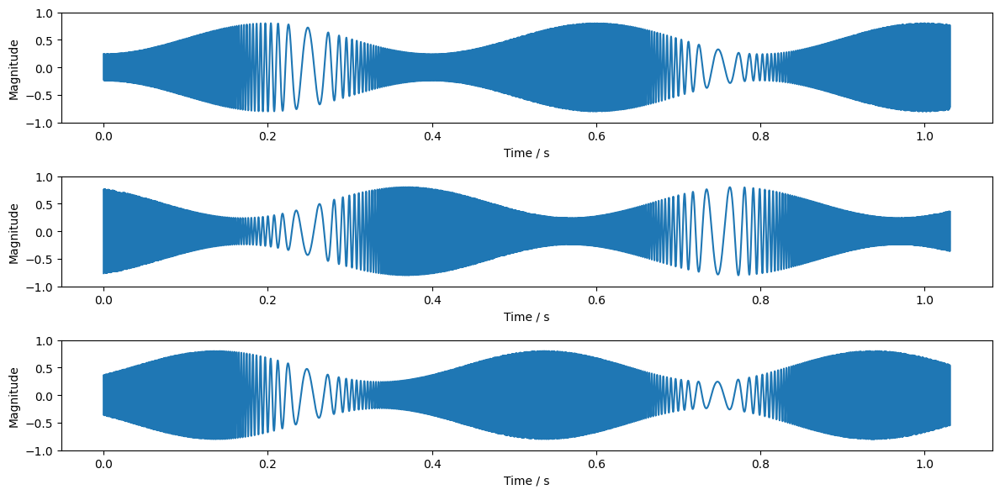
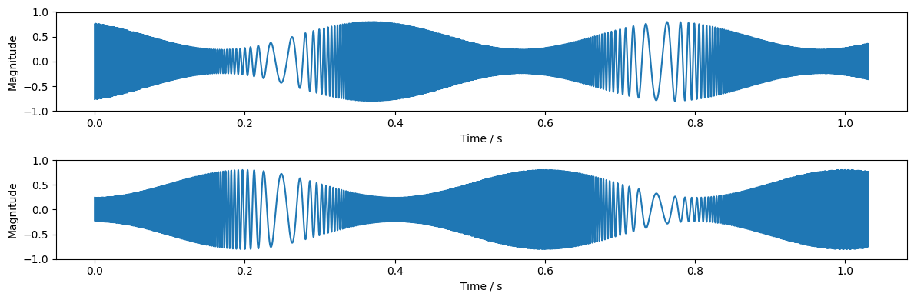
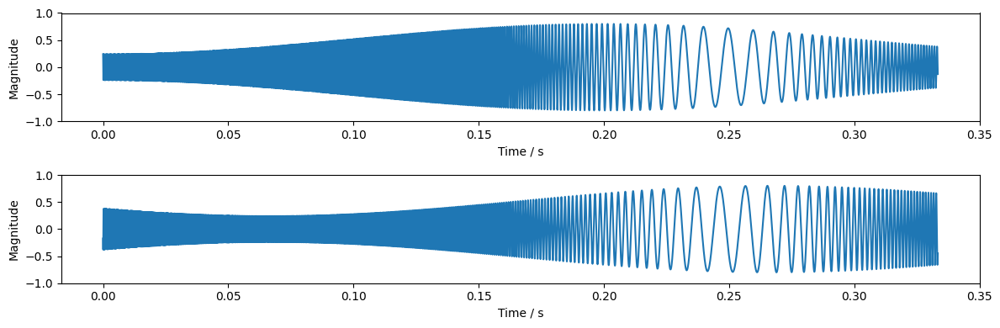

Usage¶
Remix signal¶
Create AM/FM signal with three channels
and a sampling rate of 16kHz
using audresample.am_fm_synth().
import audresample
sampling_rate = 16000
num_samples = 16500
num_channels = 3
signal = audresample.am_fm_synth(
num_samples,
num_channels,
sampling_rate,
)
signal.shape
(3, 16500)

Mixdown signal to mono.
mixed = audresample.remix(
signal,
mixdown=True,
)
mixed.shape
(1, 16500)
Select the last channel.
mixed = audresample.remix(
signal,
channels=-1,
)
mixed.shape
(1, 16500)

Select the second and first channel.
mixed = audresample.remix(
signal,
channels=[1, 0],
)
mixed.shape
(2, 16500)

Mixdown first and second channel to mono.
mixed = audresample.remix(
signal,
channels=[0, 1],
mixdown=True,
)
mixed.shape
(1, 16500)

Resample signal¶
Create AM/FM signal with two channels
and a sampling rate of 48kHz
using audresample.am_fm_synth().
import audresample
original_rate = 48000
num_original = 16000
num_channels = 2
signal = audresample.am_fm_synth(
num_original,
num_channels,
original_rate,
)
signal.shape
(2, 16000)

Resample signal to 8kHz using
audresample.resample().
target_rate = 8000
resampled = audresample.resample(
signal,
original_rate,
target_rate,
)
resampled.shape
(2, 2667)